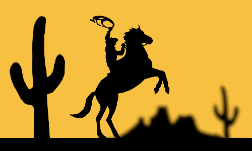
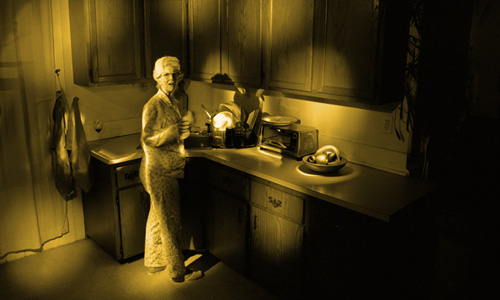

Creative Technologist in Product Design

Artist Statement: American science fiction movies, television shows, cartoons and superhero comic book escapades were regular imports growing up in the Philippines. Thanks to action figure toys, the stories continued well beyond the screen and comic pages. These photographs of paper cut-outs revisit those toys and boyhood narratives, while addressing cultural hegemonies and American hero tropes.
View Series
Artist Statement: I am interested in particular cinematic gestures in movies. From Spielberg reels to Godzilla camp, there's a certain reaction shot that is reitereated over and over, employed perhaps to mirror, augment and tap into collective anxieties. I use my own brand of camp and noir-like effect to explore this idea of anxiety and of the sublime.
View Series